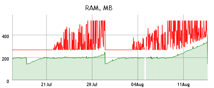
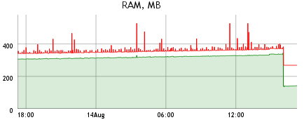

Btsync и утечка памяти
Вот уже несколько месяцев использую btsync для распространения бэкапов своего сервера по местам хранения. И вот когда проект перешёл в стадию beta начались утечки памяти.
Вот месячная статистика расхода памяти:

Два провала в середине - это перезапуски btsync в связи с выходом новой версии. Проблема началась с выхода 1.1.42. Хотя может и раньше, т.к. я пропустил несколько предыдущих версий.
А вот статистика за сутки:

Провал в конце - это я перезапустил btsync.
Настройка точки доступа на openwrt Вывод звука через колонки на сервере и на клиенте